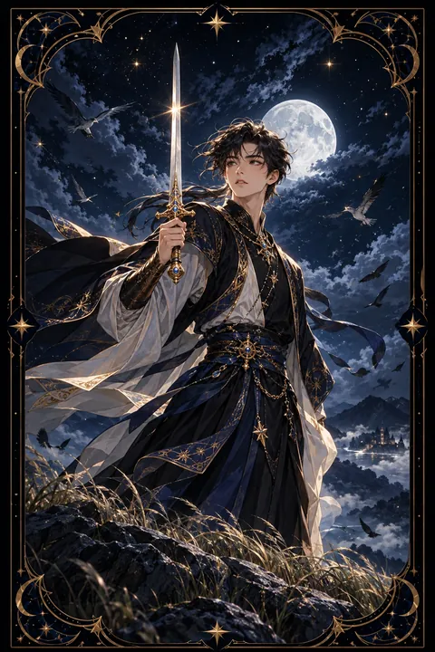

검 시종 카드 — 날카로운 호기심과 배움
검 시종 카드 한눈에 보기
검 시종 카드 상징 읽기

동네보살의 카드 그림은 전통 라이더–웨이트 덱의 뜻을 새 그림으로 옮긴 것입니다. 아래 상징 설명은 전통 덱의 그림을 기준으로 합니다.
검 시종은 바람이 부는 언덕 위에서 양손으로 검을 곧게 치켜든 젊은 인물입니다. 몸은 한쪽을 향하지만 고개는 다른 쪽을 돌아보고 있어 주변의 변화를 놓치지 않으려는 경계심을 드러냅니다.
하늘에는 흩어진 구름이 빠르게 흘러가고 새 떼가 높이 날고 있습니다. 검의 원소인 공기를 강조하는 장치로 생각과 소식이 빠르게 움직이는 상태를 뜻합니다. 멀리 날아가는 새는 넓은 시야와 자유로운 발상을 상징합니다.
시종이 서 있는 높은 언덕은 아래를 내려다보며 상황을 파악하려는 태도를 보여 줍니다. 바람에 흔들리는 나무와 풀은 아직 정해지지 않은 변화의 기운을 나타냅니다. 시종은 기사나 왕처럼 노련하지는 않지만 배우려는 의지와 날카로운 관찰력으로 새로운 소식을 가장 먼저 알아채는 인물입니다.
검 시종 카드 정방향 뜻
정방향 검 시종은 호기심과 배움의 기운이 강한 시기를 뜻합니다. 새로운 지식을 받아들이는 속도가 빠르고 궁금한 것을 끝까지 파고드는 힘이 있습니다. 공부를 시작하거나 새 분야를 탐색하기에 좋은 때입니다.
이 카드는 날카로운 관찰력과 솔직한 소통도 강조합니다. 주변 상황을 빠르게 읽어 내고 필요한 말을 분명하게 전할 수 있습니다. 새로운 소식이나 정보가 들어올 가능성이 있으니 눈과 귀를 열어 두세요.
아직 경험이 많지 않은 단계라서 모르는 것은 솔직하게 묻는 태도가 성장을 이끕니다. 떠오르는 아이디어를 메모해 두고 작은 실험으로 확인해 보면 좋습니다. 다만 들은 이야기를 곧바로 퍼뜨리기보다 사실인지 먼저 확인하는 습관을 들이면 신뢰도 함께 쌓입니다. 배운 내용을 누군가에게 설명해 보는 것도 이해를 깊게 하는 좋은 방법입니다.
검 시종 카드 역방향 뜻
역방향 검 시종은 호기심이 엉뚱한 방향으로 흐르는 모습입니다. 남의 사정을 캐거나 확인되지 않은 소문을 옮기며 불필요한 갈등에 휘말릴 수 있습니다. 생각은 많지만 실천으로 이어지지 않아 여러 일을 건드리기만 하고 마무리하지 못하는 경우도 있습니다.
말이 생각보다 앞서 나가는 것도 조심해야 합니다. 급하게 던진 한마디가 오해를 낳거나 상대에게 상처를 줄 수 있습니다. 반대로 주변에서 당신의 말을 왜곡해 옮기는 사람이 있을 수 있으니 중요한 이야기는 신중하게 나누는 편이 좋습니다.
이 카드가 능력 부족을 뜻하지는 않습니다. 흩어진 관심을 한 가지 질문으로 모으고 사실을 직접 확인하는 습관을 되찾으면 날카로운 판단력이 다시 살아납니다. 말하기 전에 한 번 더 생각하는 여유를 가져 보세요.
연애에서 검 시종 카드
솔로라면 새로운 사람을 알아 가는 설렘이 찾아오는 시기입니다. 대화를 통해 호감이 생기기 쉬우니 관심 가는 사람이 있다면 가벼운 질문으로 말을 걸어 보세요. 재치 있는 메시지나 공통 관심사가 관계의 시작이 됩니다.
이미 곁에 연인이 있다면 서로를 더 깊이 알아 가려는 노력이 관계를 새롭게 합니다. 평소 몰랐던 상대의 생각을 묻고 경청해 보세요. 다만 상대의 휴대전화를 몰래 살피거나 주변 사람에게 상대의 마음을 캐묻는 행동은 신뢰를 떨어뜨립니다. 궁금한 것이 있다면 당사자에게 직접 솔직하게 묻는 것이 가장 좋습니다. 사소한 말실수가 다툼으로 번지지 않도록 감정이 격해질 때는 잠시 말을 멈추는 연습도 도움이 됩니다. 함께 새로운 것을 배우는 데이트도 관계에 신선한 바람을 불어넣어 줍니다.
재회·속마음 질문에서 검 시종 카드
재회 질문에서 검 시종은 상대의 소식을 살피며 탐색하는 단계를 뜻합니다. 서로 직접 연락하기보다 주변을 통해 근황을 확인하고 있을 수 있습니다. 가볍고 부담 없는 연락이 대화의 문을 여는 계기가 될 수 있습니다. 다만 지인에게 상대의 이야기를 캐묻거나 떠도는 소문을 믿고 판단하면 오해가 커집니다. 궁금한 점은 상대에게 직접 확인하는 편이 좋습니다. 조급하게 결론을 내리기보다 대화를 조금씩 쌓아 가며 서로의 달라진 모습을 알아 가세요. 상대의 소셜 미디어를 반복해서 확인하는 습관은 불안만 키울 수 있으니 조금 거리를 두는 편이 좋습니다. 대화가 다시 시작된다면 과거를 따지기보다 지금의 관심사를 나누는 데서 출발해 보세요.
일·금전에서 검 시종 카드
직장과 일에서는 낯선 업무를 익히고 아이디어를 내놓기 좋은 시기입니다. 모르는 것을 적극적으로 묻고 빠르게 익히는 태도가 좋은 평가로 이어집니다. 자료 조사나 분석처럼 정보를 다루는 일이라면 당신의 눈썰미가 돋보입니다. 회의에서는 짧고 분명한 질문 하나가 오히려 존재감을 높여 줍니다.
돈 관리 쪽에서는 기초 지식을 쌓기 좋은 때입니다. 지출 내역을 살펴보고 절약 방법을 공부해 보세요. 다만 출처가 불분명한 수익 정보나 소문에 휩쓸리지 않도록 주의해야 합니다. 새로운 정보는 한 번 더 확인한 뒤 움직이는 것이 안전합니다. 모르는 용어는 그때그때 적어 두면 금세 내 것이 됩니다. 보고서나 계약서는 한 번 더 읽고 물음표가 남는 곳을 먼저 확인하세요.
검 시종 카드는 예일까 아니오일까
새로운 정보와 배움이 열리는 카드이지만 아직 경험이 부족한 단계라 조건부로 봅니다. 사실을 충분히 확인하고 신중하게 움직인다면 긍정적인 답으로 기울 수 있습니다.
자주 묻는 질문
검 시종 카드 역방향은 나쁜 뜻인가요?
역방향 검 시종은 호기심이 엉뚱한 방향으로 흐르는 모습입니다. 남의 사정을 캐거나 확인되지 않은 소문을 옮기며 불필요한 갈등에 휘말릴 수 있습니다. 생각은 많지만 실천으로 이어지지 않아 여러 일을 건드리기만 하고 마무리하지 못하는 경우도 있습니다.
검 시종 카드가 연애 질문에 나오면요?
솔로라면 새로운 사람을 알아 가는 설렘이 찾아오는 시기입니다. 대화를 통해 호감이 생기기 쉬우니 관심 가는 사람이 있다면 가벼운 질문으로 말을 걸어 보세요. 재치 있는 메시지나 공통 관심사가 관계의 시작이 됩니다.
타로 카드는 어떻게 뽑나요?
타로 카드 페이지에서 78장을 섞으면 그중 22장이 펼쳐집니다. 마음이 가는 세 장을 고르면 과거·현재·미래 자리에 놓이고, 한 장씩 뒤집어 자리와 방향에 맞는 풀이를 읽습니다. 정방향과 역방향은 섞는 순간 정해집니다.